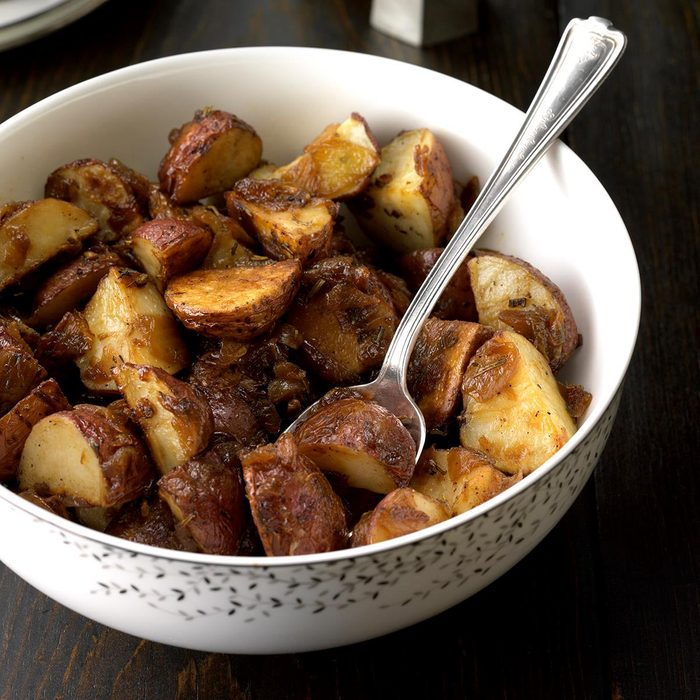

Rosemary Potatoes With Carmelized Onions

Ingredients
- 2 pounds small red potatoes, quartered
- 2 garlic cloves, minced
- 1 tablespoon olive oil
- 2 teaspoons minced fresh rosemary or 1/2 teaspoon dried rosemary, crushed
- 1/2 teaspoon minced fresh thyme or 1/8 teaspoon dried thyme
- 1/4 teaspoon salt
- 1/4 teaspoon pepper
- Carmelized Onions:
2 large sweet onions, chopped
- 2 tablespoons olive oil
- 1 tablespoon sugar
- 2 teaspoons balsamic vinegar
Steps
- In a large bowl, combine the first 7 ingredients; toss to coat. Transfer to a greased 15x10x1-in. baking pan.
- Bake at 425° for 45-50 minutes or until potatoes are tender, stirring once.
- Meanwhile, in a large skillet, saute onions in oil until softened. Stir in sugar. Reduce heat to medium-low; cook for 30-40 minutes or until deep golden brown, stirring occasionally. Stir in vinegar.
- Transfer roasted potatoes to a large bowl; stir in caramelized onions.
Home